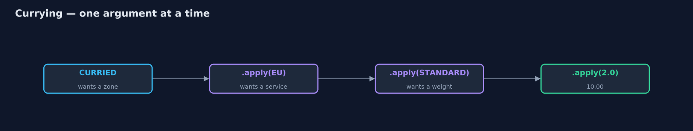
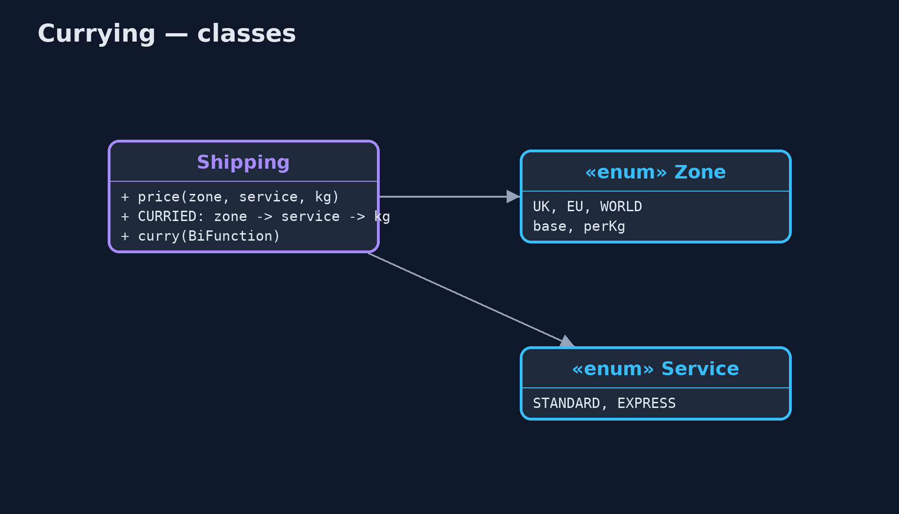
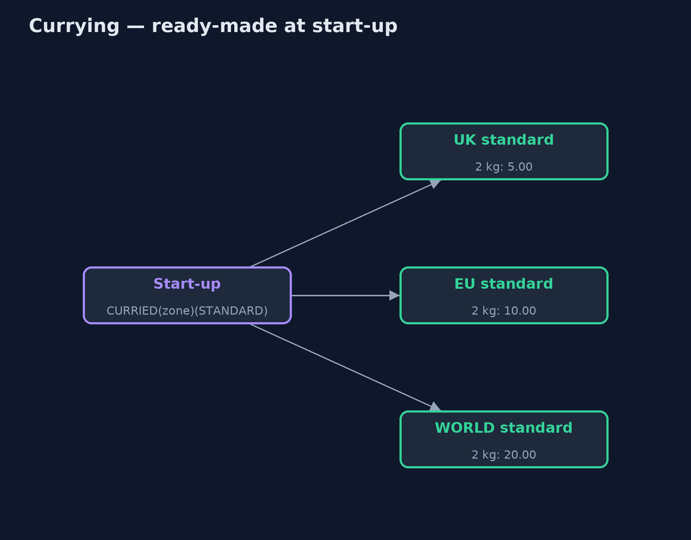
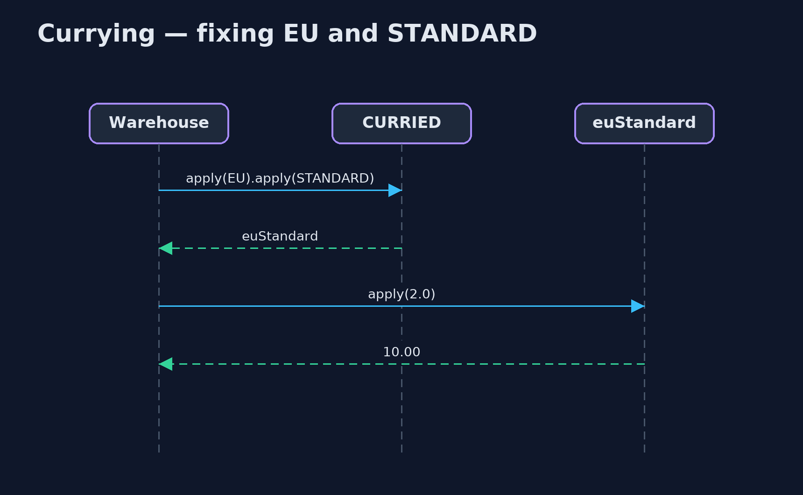

Currying Pattern
src/main/java/com/jk/explore/currying/
├── CurryingDemo.java The five acts: repeated arguments, a curried function, ready-made functions per zone, argument order, and the bill
├── Service.java How fast: express costs twice as much
├── Shipping.java The shipping price, first as an ordinary three-argument method, then curried: a chain of one-argument functions, so the first arguments can be fixed early
└── Zone.java Where a parcel is going, with the carrier's base charge and charge per kilogramTurn a function of several arguments into a chain of one-argument functions, so the arguments known early can be fixed once, leaving a smaller function for the ones that change.
Currying turns a function that takes several arguments into a chain of functions that each take one. Instead of price(zone, service, weight), you have a function that takes a zone and returns a function that takes a service, which returns a function that takes a weight.
The point is partial application: supplying some arguments now and the rest later. A warehouse that always ships to the EU by standard post fixes those two once, and is left with a simple function of weight alone. The name comes from the logician Haskell Curry.
The idea in everyday terms
Think of a coffee shop loyalty card that already knows your usual: oat milk, large. At the counter you only say "latte" or "flat white". The usual choices were fixed once, when the card was set up; only the part that changes is given each time.
The scenario
The online store's shipping price depends on the zone, the service and the weight. The EU warehouse only ever ships to the EU by standard post, yet every call it made spelled out "EU, STANDARD" before the one argument that actually changed: the weight.
Run
./gradlew runThe demo tells the story in 5 acts, each printing exact numbers that the tests check:
| Act | What it shows |
|---|---|
| 1. Repeated arguments | The EU warehouse calls price(EU, STANDARD, kg) for 0.5, 2 and 10 kg: 7.00, 10.00, 26.00, repeating EU and STANDARD every time. |
| 2. A curried function | euStandard = CURRIED.apply(EU).apply(STANDARD); euStandard.apply(2.0) is 10.00, the same as price(EU, STANDARD, 2.0). |
| 3. Ready-made functions | One function per zone is built at start-up: 2 kg standard is UK 5.00, EU 10.00, WORLD 20.00; EU express mapped over parcels gives 14, 20, 52. |
| 4. Argument order matters | discount(percent, price) curried and given 20 is a 20%-off function: 45 becomes 36.00; with (price, percent), 20 fixes the price and gives 11.00. |
| 5. The bill | The type is Function<Zone, Function<Service, Function<Double, Double>>>; a plain lambda kg -> price(EU, STANDARD, kg) gives the same 10.00. |
Test
./gradlew test3 tests in DemoRunsTest, ShippingTest. Every number the demo prints is asserted, and nothing depends on the clock, so every run gives the same result.
Technologies and versions
| Technology | Version | Used for |
|---|---|---|
| Java | 21 | the code (toolchain set in build.gradle) |
| Gradle | 9.2.1 (wrapper) | build and run, nothing to install |
| JUnit | 5.10.2 | the tests |
| videokit | repository tool | the narrated video and animation: Piper en_US-amy-medium, speed 0.8, longer pauses (the approved amy-slow voice) |
Learning Material
| Document | What it is for |
|---|---|
| Problem statement | the situation and what the project must show |
| Prerequisites | what you need to know first |
| Currying, explained | the acts in prose |
| Session guide | a one-hour lesson with exercises |
| Animated walkthrough | the acts step by step, narrated |
| Spec | what this project must be true of |
The pattern in one picture
Each step returns a smaller function.

Where each piece sits
The same price, two shapes.

How the data moves
One function per zone; checkout gives only the weight.

Who calls whom, in order
Two applies now, one later.

Video
video/currying-pattern-explained.mp4 (with .m4a audio and .srt subtitles) is built by video/build_video.sh. Rendered media is not committed.
What it costs
- Noisy in Java. The type
Function<Zone, Function<Service, Function<Double, Double>>>and chains of.applyare hard to read. - Order is fixed. Currying fixes arguments first to last, so they must be ordered from least to most changing; the wrong order gave nonsense.
- Often a lambda is clearer.
kg -> price(EU, STANDARD, kg)does the same partial application in plain sight.
When this is too much
When a function is always called with all its arguments, currying adds only noise. It pays off when some arguments are known long before others, and the smaller function is passed around or reused.
Where you have already met this
- Every function in Haskell and F# is curried.
Function<A, Function<B, R>>in Java libraries such as Vavr, withcurried().- Configured objects and factories: fixing settings once, then calling with the changing part.
Where this sits
This project is in functional-design-patterns, next to Higher-Order Functions: a curried function is a function that returns a function.